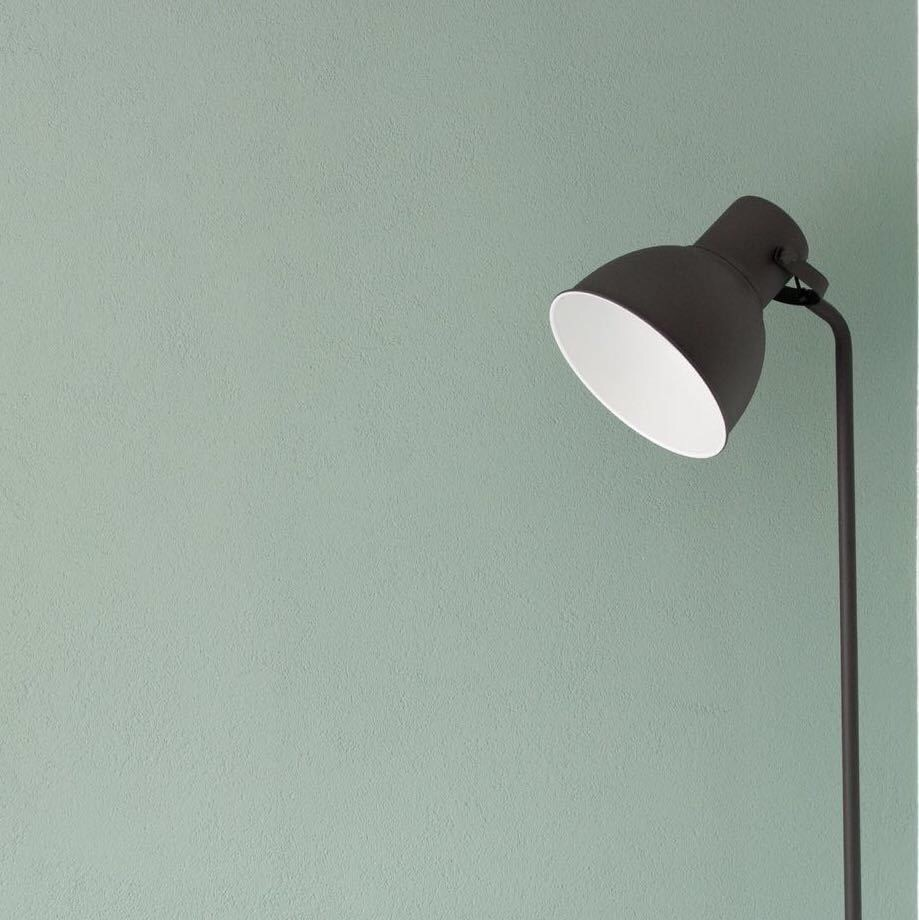

Monologue.№
"It was but yesterday I thought myself a fragment quivering without rhythm in the sphere of life."
乌龙奶茶和失眠的我
单曲循环人类的脆弱
浅金色阳光下那沙砾
闪耀清澈的幻色悸动
后隐生一种沉默信仰
温暖且深邃簇拥而眠
前两日见了一篇文，道：“生而为人，请务必善良”，刹时颇为悸动，只是一瞬。今夜里忽想起，心神一颤。
这些年在外头欲坚毅自己，却愈发严闭了。“百善孝为先”，所言非虚。书经为人颂，然鲜有人得法。身受教，而后顿纳，如饮水自然。国中长辈于内安生，不忘外，此善当铭记。冲触，则神满伤，并无大益，于私公皆是。家国天下志怀不可灭，恪守本分亦不可失。
琳琅万世，诸生追之，忘初。不得而心焚，拥山拥水，庸人自扰。溯目澈之年，福于无求。今当归祖训，“千虑一得”，从「虑得集 」 ，崇德孝义，至善克励，以正身。